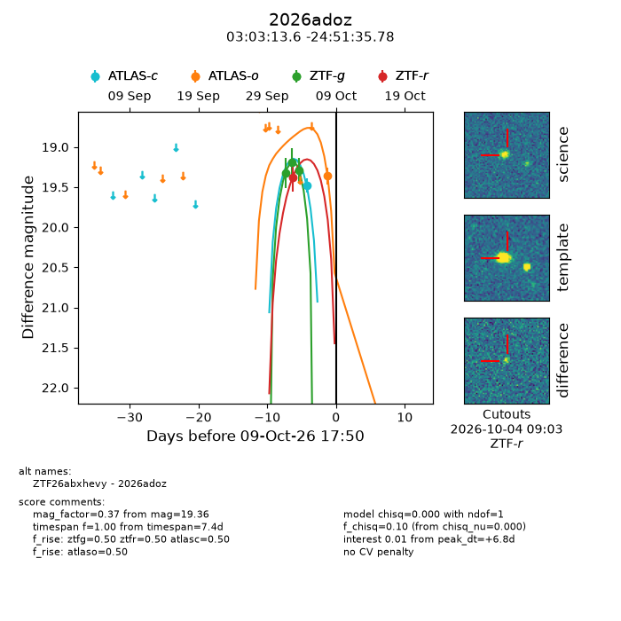
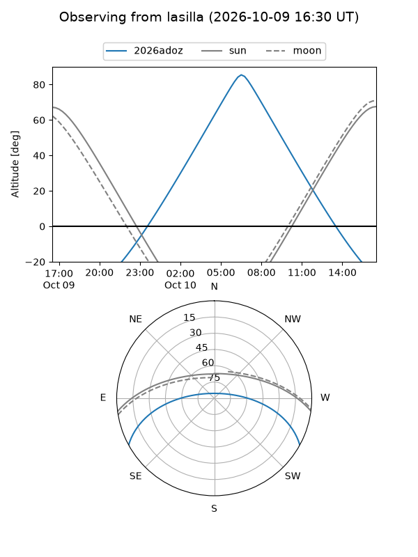
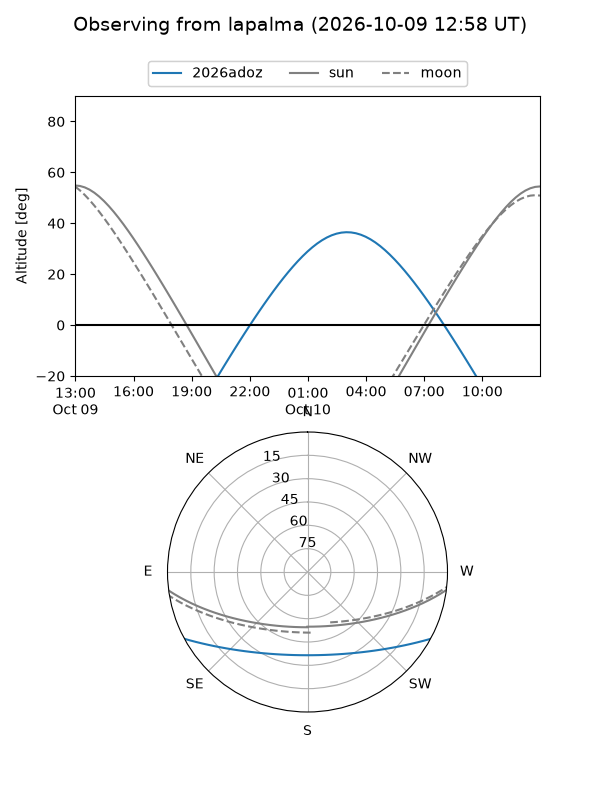
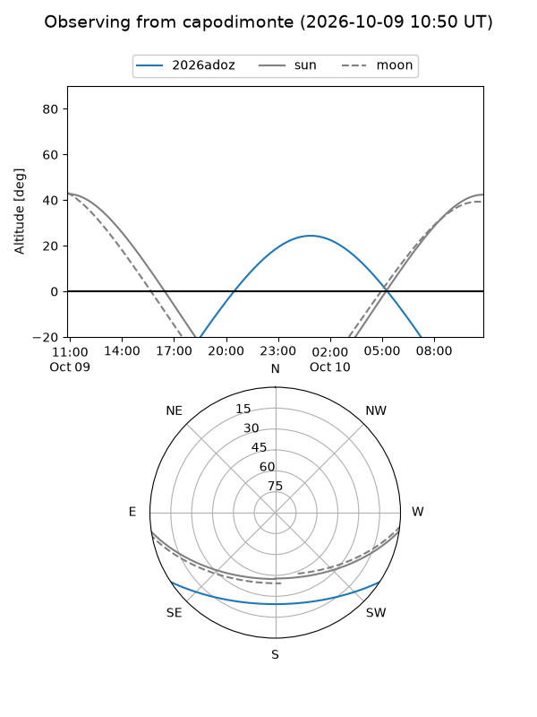
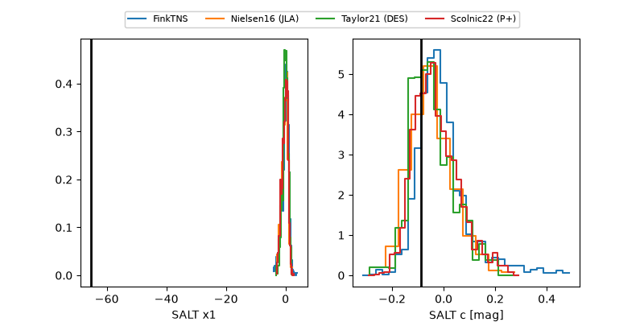

2026adoz
Target 2026adoz at 2026-10-09 17:51
Aliases and brokers:
FINK-ZTF: ztf.fink-portal.org/ZTF26abxhevy
Lasair-ZTF: lasair-ztf.lsst.ac.uk/objects/ZTF26abxhevy
ALeRCE-ZTF: alerce.online/object/ZTF26abxhevy
YSE-PZ: ziggy.ucolick.org/yse/transient_detail/2026adoz
TNS name: wis-tns.org/object/2026adoz
Direct TNS query: direct search
alt names
ZTF26abxhevy (ztf,fink_ztf)
2026adoz (tns,yse)
Coordinates:
equatorial (ra, dec) = 45.8069,-24.85994
equatorial (HMS+DMS) = 03:03:13.65,-24:51:35.78
galactic (l, b) = (216.0592,-60.38240)
Flags:
peak dt: +6.8
Photometry:
last atlasc=19.48, atlaso=19.36, ztfg=19.29, ztfr=19.38
1 atlasc, 1 atlaso, 3 ztfg, 1 ztfr detections
Lightcurve

Visibility



Additional plots
